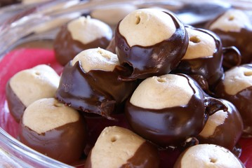

Buckeye Recipe

A simple yet, delicious dessert!
This dessert popped up in 1964 and immediately became an Ohio icon because it looks just like our state's
native tree nut — the buckeye. It's ridiculously simple to make, but man, it's absolutely to die for.
And listen… the next time someone wants to clown on Ohio, just remind them: without us, there are no
Buckeyes!
You're welcome, America.
Ingredients
- 2 cups creamy peanut butter, not “natural” peanut butter
- 1/2 cup unsalted butter softened
- 2 Tablespoons light brown sugar
- 1/4 teaspoon salt
- 1 & 1/4 teaspoon vanilla extract
- 3 & 1/4 cups powdered sugar
- 2 cups semisweet chocolate chips
- 1 teaspoon coconut oil or vegetable shortening
- Combine peanut butter and butter in the bowl of a stand mixer and beat until well-combined.
- Add brown sugar, vanilla extract, and salt. Stir well.
- Gradually add powdered sugar until completely combined. Scoop into Tablespoon-sized balls and roll with the palms of your hand until smooth and round.
- Place on wax-paper lined cookie sheet and freeze for 15-20 minutes.
- While peanut butter balls are chilling, combine chocolate chips and coconut oil "or vegetable shortening" and heat in the microwave in 25-second intervals "stirring well in between" until chocolate is smooth and completely melted. Pour into a deep dish.
Storage
Buckeyes should be stored in an airtight container. They will keep at room temperature for up to 2
days, in the refrigerator for 2-3 weeks, or in the freezer for several months.
Home